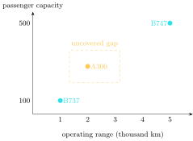

Definition
Once the segment is chosen: how to compete inside it? Strategic positioning combines (1) the value perceived by customers relative to price and (2) the customer's perception of how the offer compares with competitors' (benchmarking). Tools: perception maps, gap analysis, importance–performance.
Model
Perception maps
Show graphically the product's position in customers' eyes on pairs of attributes relevant to the purchase decision; choosing the right attributes (for the product and the competitors) is essential. Example — chocolate: axes price (low → high) × quality (low → high). Premium bars (Lindt, dark Swiss chocolate) sit high-quality/high-price; Milka high quality at moderate price; Kinder Surprise near the centre; Twix and KitKat lower quality and lower price. Empty regions suggest gaps in the offer.
Importance–Performance matrix (Nigel Slack)
Two variables: performance relative to competitors (1 = much better … 9 = much worse) and objective importance of the attribute in the segment (order-winning … qualifying … less important). Four zones:
| Zone | Meaning | Action |
|---|---|---|
| Appropriate | performance matches importance | maintain |
| Improve | performance a bit below what importance needs | improve |
| Urgent action | important attribute, performance worse than | top priority |
| competitors | ||
| Excess? | performance far above an unimportant attribute | reallocate |
It shows which features are under- or over-sized and sets improvement priorities.
SERVQUAL gap analysis
Parasuraman, Zeithaml and Berry (1988): multidimensional instrument capturing expectations and perceptions of a service on five dimensions (tangibles, reliability, responsiveness, assurance, empathy). Purpose: reduce the progressive distortion of perceptions along the chain and avoid management bias.
| Gap | Between |
|---|---|
| 1 | customer expectations ↔ management perception of them |
| 2 | management perception ↔ service-quality specifications |
| 3 | specifications ↔ service actually delivered |
| 4 | service delivered ↔ external communications to customers |
| 5 | expected service ↔ perceived service (the customer gap) |
Expected service is shaped by word of mouth, personal needs and past experience. Gap 5 is the result of gaps 1–4. See quality.
Worked example
Airbus A300: map passenger capacity (100–500) × operating range (1–5 thousand km). Boeing's B737 occupied ~100 seats/short range, the B747 ~500 seats/long range: a large empty area existed in between. Airbus positioned the A300 in the medium-capacity (about 250–300 seats), short-to-medium-range gap — a market need no competitor served.
Pitfall
Positioning lives in the customer's mind: it is not what the firm says about itself. A perception map is only as good as the attributes chosen. In Slack's matrix "excess" is a waste, not a strength to celebrate.
Recall
Draw the chocolate map; list Slack's four zones with action; name the five SERVQUAL gaps; explain the A300 positioning.
Picture

Airbus placed the A300 where no existing aircraft met the airlines' need.